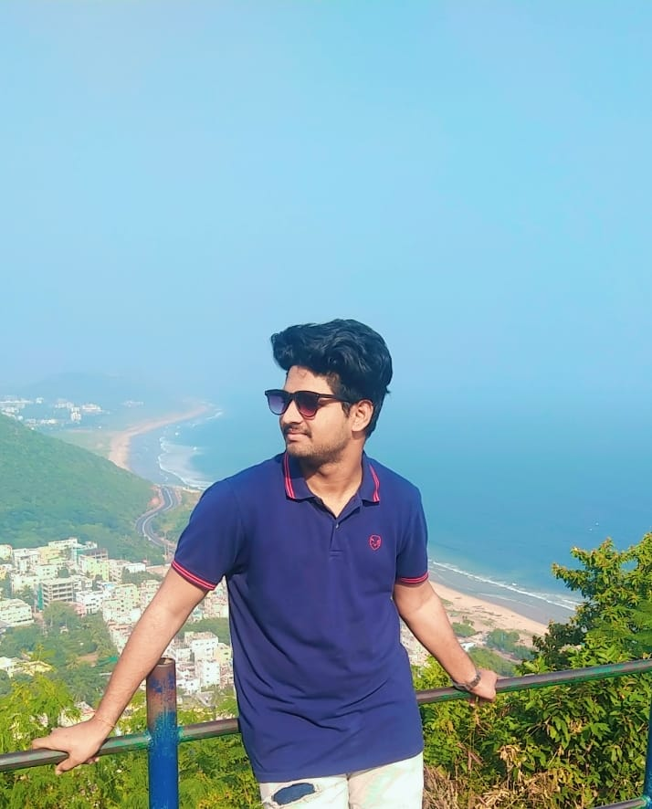

POLAMARASETTY KUSHAL SAI
computer science engineering
PROFESSIONAL PROFILE
A highly motivated hard working student with the knowledge
of computer science gained in diploma with good
communication skills and eager to learn many new courses ,
enjoys learning in new things which boost my mood and
confidence , willing to work hard in a demanding position
EDUCATION
Bachelor of Technology
-
Btech in CSE, Anil Neerukonda
institute of technology and
sciences
2022 – 2025
Visakhapatnam, India CGPA:8.3
DIPLOMA
- GOVERNMENT POLYTECHNIC
COLLEGE
ANAKAPALLI,DIPLAMO|COMPUTE
R ENGINEERING
2019-2022
CGPA: 82 %
SSC
- ZP HIGH SCHOOL
NARAVA,VISAKHAPATNAM
2018-2019
GPA : 9.5/10
SKILLS
- python
- web technologies
- java
- c language
- leadership skills
- team work
ACHIEVEMENTS AND PARTICIPATION
- won second prize in aws hackathon
conducted by brain-o-vision
- participated and completed
cybersecurity workshop program
- Presented a ppt on industrial training at
government polytechnic college in april-2022.
EXTRA CURRICULAR ACTIVITIES
- played cricket qualify matches in
school level
- Played kabaddi league match in
village level
- Singing
- Won quiz competition in school
level
LANGUAGES KNOWN:
CONTACT ME